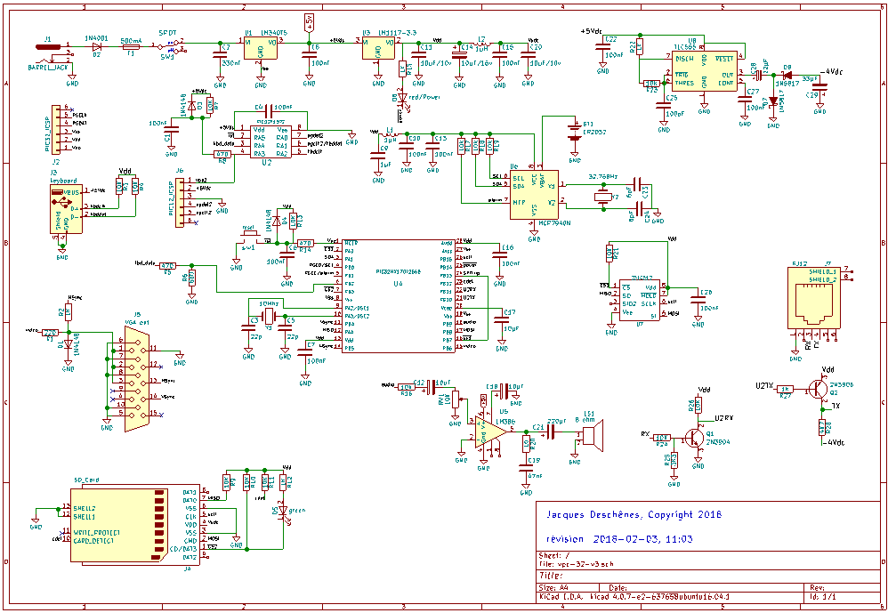

Ce document fait partie du projet VPC-32V et est fourni sous licence
CC-NC-SA-BY V3.0
auteur: Jacques Deschênes
révision 1.0
Copyright: 2013-2018 Jacques Deschênes
Grâce à la technologie moderne il est possible avec un minimum de composants de fabriquer chez soi un ordinateur dont les capacités dépassent celle d'un ordinateur personnel datant de 1980. Le VPC-32V ne compte que 7 circuits intégrés incluant les 2 régulateurs de tensions. Il a été assemblé sur une carte de prototypage à pastille double faces en quelques heures seulement.



Ce circuit est si simple qu'il tient sur une seule page KiCAD. Dans les paragraphes suivants je fais une description de chaque module du circuit.

À la prise J1 se branche un adapteur secteur qui fournis un voltage DC entre 7-12 volt à 250mA. La diode D2 protège contre les inversions de tension. La mise sous tension de l'ordinateur se fait par SW1. Le C.I. U1 est un régulateur de tension donnant 5VDC à la sortie. Ce voltage est rendue nécessaire pour l'utilisation du clavier, sinon le reste du circuit fonctionne à 3,3VDC qui est fournis par le deuxième régulateur de tension U3. Lors de l'insertion d'une carte SD une pointe de courant se produit qui fait chuter la tension à la sortie de U3. Pour empêcher cette chute de tension qui, bien qu'elle soit brève, déclenchait une réinitisalistaion du MCU j'ai ajouté le filtre constitué des composants C14,L2,C15 et C20 qui empêche la chute de tension au point Vsdc de se progager au point Vdd.
L'ordinateur consomme environ 75ma. J'ai installé un fusible de 500ma à l'entrée de l'alimentation qui peut réponde facilement à la pointe de courant lors de l'insertion d'une carte SD.
La DEL D6 sert d'indicateur de mise sous tension. Notez que la cathode n'est pas branchée directement au 0 volt mais à la broche 25 du MCU. La DEL n'allume que lorsque l'ordinateur a complété son initialisation. S'il se produit une exception système la DEL clignote et l'ordinateur entre dans une boucle infinie. On peut réinitialiser l'ordinateur en pressant simultanément les 3 touches CTRL-ALT-DEL sur le clavier local.

Le processeur principal est un PIC32MX170F256B en format DIP-28. Bien que le cristal utilisé à l'entrée de l'oscillateur 1 est de 10Mhz, grâce au PLL incorporé la fréquence du CPU est de 40Mhz. Les PIC32MX utilisent le coeur M4K de MIPS. Il s'agit d'une architecture Harvard où la mémoire programme et la mémoire données sont sur de bus séparés. Les différents signaux sont notés sur les broches du MCU. Une barre au dessus d'un nom indique qu'il s'agit d'un signal actif à 0. Ainsi le signal ~rst doit-être mis à zéro pour réiniatilser le MCU. Le MCU demeure en reset tant que ce signal demeure à zéro. Lorsqu'il revient à 3,3 volt, le MCU débute sa séquence d'initialisation.

L'Ordinateur utilise un clavier USB qui cependant fonctionne en mode PS2. Le clavier se branche à J3. U2 qui est un MCU PIC12F1572 interprète les scancodes reçus du clavier et les convertis en codes ASCII qu'il envoie au MCU principal via un périphérique USART. Le PIC12F1572 est aussi relié à la broche 1 du MCU principal et permet de le réinitialiser. En effet le PIC12F1572 reconnais la combinaison de touches CTRL-ALT-DEL comme une commande de réinitialisation et produit une impulsion négative de 100msec à sa broche 2 ce qui a pour effet de réinitialiser le PIC32MX170F256B.
Le connecteur J6 n'est utilisé que s'il faut reprogrammer le firmware dans le PIC12F1572.

Le circuit vidéo génère un signal pour moniteur VGA. Il y a 3 broches utilisées pour la sortie vidéo.
Il s'agit d'un signal monochrome d'une résolution de 480x240 pixels. Les broches 1,2 et 3 du connecteur J5 sont branchées ensembles puisque les 3 composantes de couleur recoivent le même signal.

La sortie audio est sur la broche 18 du MCU. Il s'agit d'une sortie simple tonalité en onde rectangulaire comme sur les premiers IBM PC. Cette sortie est dirigée vers U5 qui est un LM386 classique. Un haut-parleur de 50mm est incorporé dans le boitier de l'ordinateur. Le potentiomètre RV1 permet d'ajuster le volume. Cependant il s'agit d'un trimmer et il n'est pas accessible de l'extérieur du boitier. Il serait évidemment possible de remplacer RV1 par un contrôle de volume externe si désiré.

La carte Secure Digital qui sert au stockage des fichiers est interfacée en mode SPI. Les signaux suivants sont utilisés pour cette usage.
Les cartes SD ou SDHC sont reconnues. Elles doivent-être formattées en FAT32.

Grâce à U7 qui est une mémoire RAM à interface SPI 23LC512. Une capacité supplémentaire de 64Ko est ajouté à l'ordinateur. Cette RAM est accessible dans vpcBASIC via diverses fonctions. L'éditeur de texte l'utilise aussi comme mémoire tampon pour le texte en cours d'éditon.
Cette RAM utitilise la même interface SPI que la carte SD sauf qu'elle est sélectionnée par le signal ~CS1.
Notez que la carte SD et la RAM ne peuvent pas être actif en même temps puisqu'ils utilisent la même interface SPI.

Le port COM nécessite une tension négative pour générer le signal RS-232. Cet inverseur de tension utilise U8 un TLC555. Le circuit est configuré en oscillateur pour générer un signal rectangulaire à la broche 3. Les diodes schottkey D7 et D8 ainsi que les condensateurs C28 et C29 permettent de produire une tension négative d'environ -4 volt sur C29. Ce voltage est connecté à la résistance R28 associé à la transmission sur le port COM. Lorsque la tension à la broche 3 du 555 est à 5 volt C28 se charge à travers D7. Lorsque la broche 3 tombe à zéro volt, C28 ce décharge à travers D8 dans C29. Mais la tension formée sur C29 est négative puisque c'est l'électrode négative de C28 qui est connectée à la cathode de D8.

L'adapteur de voltage pour l'interface RS-232 du port COM est est constitué de 2 transistors. Q1 pour la réception et Q2 pour la transmission. Lorsque le VPC-32V transmet sur le port COM le voltage TX varie entre Vdd lorsque U2TX est à zéro et -4Vdc lorsque U2TX est à 1. Ce qui permet de se conformer à la spécification RS-232 qui requière des signaux qui varient de -3 à -12 volt pour le niveau logique 1 et de +3 à +12 volt pour le niveau logique 0.
Le transistor Q1 lui joue deux rôles. Le premier est d'inverser la valeur du signal reçu en RX. L'autre est de limiter ce signal à l'intervalle {0..Vdd}. Ce signal conditionné est envoyé à l'entrée U2TX du PIC32MX.
Par défaut l'interface COM est configurée à 115200 BAUD, 8 bits, pas de parité et 1 stop bit.
Le VPC-32V communique avec le protocole VT-100.
Cependant ce n'est pas la totalité des commandes VT-100 qui sont reconnues et utilisées.
Il n'y a pas de contrôle de flux matériel. Le terminal doit-être configuré pour reconnaître le contrôle de flux logiciel XOFF/XOFF. Le périphérique du MCU utilisé pour le port COM est USART 2.

Le C.I. U6, MCP7940N est un RTCC, C'est à dire un calendrier/horloge temps réel. La date et l'heure sont conservées même lorsque l'ordinateur est éteint grâce à la pile au lithium BT1 de type CR2032. Il n'est donc pas nécessaire de reprogrammer la date et l'heure chaque fois qu'on allume l'ordinateur. De plus 2 alarmes peuvent-être programmées dans le RTCC. La commande alarm dans le shell permet de gérer les alarmes. D'autres commandes permettent d'ajuster la date et l'heure et de calibrer l'oscillateur du RTCC s'il l'horloge retarde ou prend de l'avance.